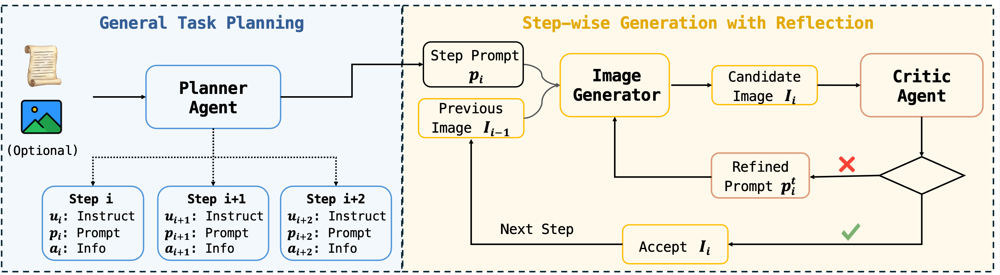
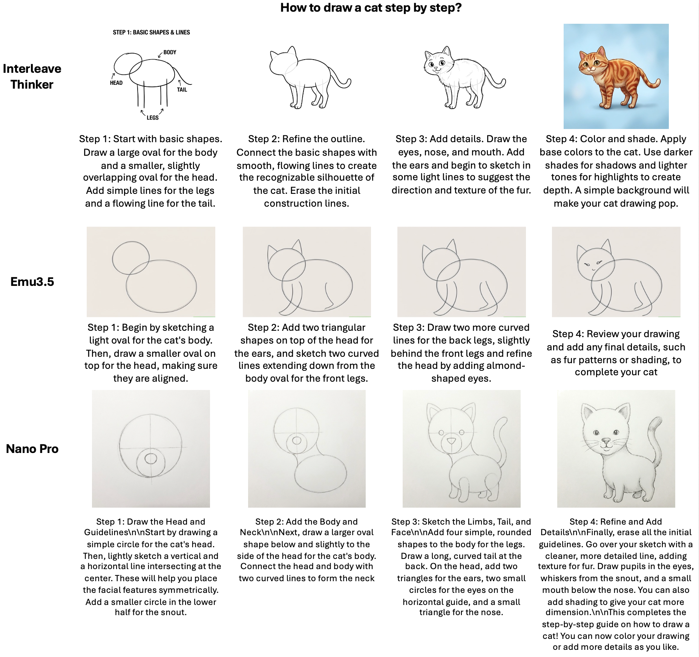
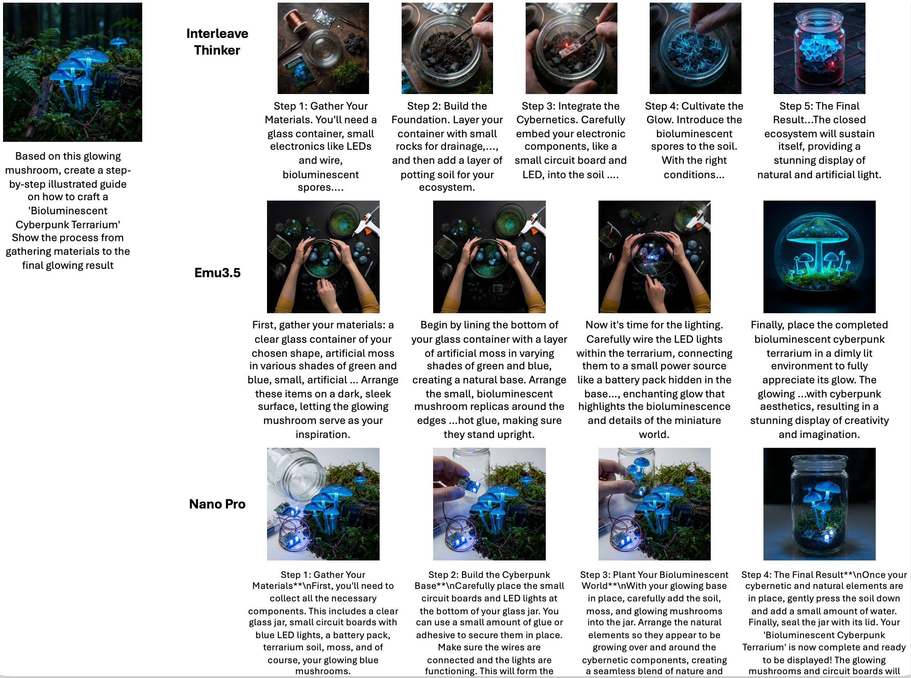

InterleaveThinker: Reinforcing Agentic Interleaved Generation
We introduce InterleaveThinker, a multi-agent pipeline that endows existing image generators with interleaved generation capabilities through planning, critique, and step-wise instruction refinement.
1CUHK MMLab · 2Meituan · 3CUHK IMIXR
*Work done while Dian Zheng was an intern at Meituan · †Project Leader · ✉Corresponding Author

Abstract
Interleaved generation asks a system to produce coherent text-image sequences across multiple dependent steps, where each visual result must respect both the current instruction and the accumulated history.
We introduce InterleaveThinker, a multi-agent pipeline designed to endow existing image generators with interleaved generation capabilities. A planner agent organizes the image-text input sequence and decomposes it into executable generation steps. A critic agent evaluates generator outputs, identifies deviations, and refines instructions for subsequent generation.
We build dedicated training datasets for planner supervised fine-tuning, critic supervised fine-tuning, and critic reinforcement learning. With GRPO and proposed accuracy and step-wise rewards, InterleaveThinker learns to perform step-aware correction and transfers across multiple image generation backends We further transform our data into real interleaved data with two mode: 1) simple version without reflection. 2) hard version with reflection. Enjoy it!.
Method
InterleaveThinker decouples high-level interleaved reasoning from low-level image synthesis by multi-agents workflow. The agents plan and correct the sequence, while the image generator performs each generation or editing action.

Qualitative Results
Representative examples for visual narratives, instructional guidance, embodied manipulation, and long-horizon sub-task annotation.

